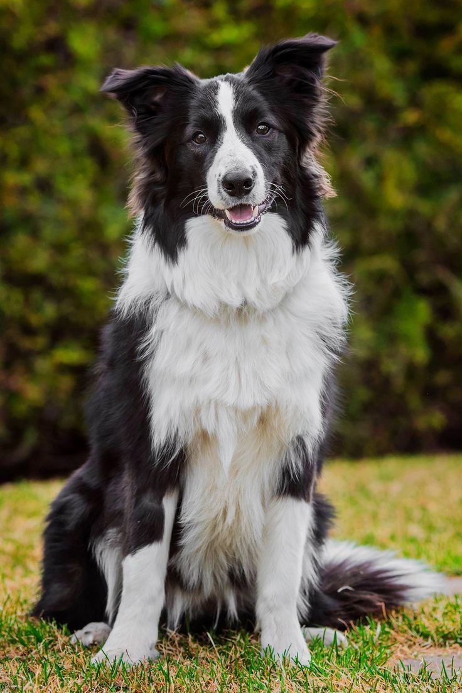
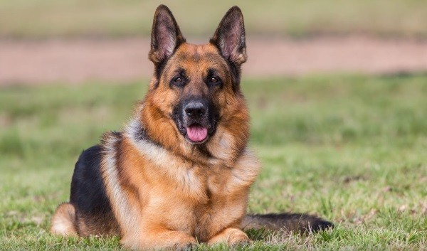

До найрозумніших порід собак відносять бордер-коллі, пуделя, німецьку вівчарку, золотистого ретрівера та добермана, які здатні вивчити нову команду менш ніж за 5 повторень. Вони вирізняються високою здатністю до дресирування, пам'яттю та здатністю приймати самостійні рішення. Бордер-коллі визнаний найрозумнішою породою.
Бордер-колі (англ. Border Collie) — вівчарська порода собак, створена у Великій Британії. Відноситься до пастуших порід, спочатку була виведена для роботи з вівцями, проте пізніше були виділені скотогонні різновиди, для випасання великої рогатої худоби. Згідно з дослідженнями, проведеними вченими з університету Британської Колумбії під керівництвом Стенлі Корена[en] , Бордер-колі зайняли друге місце за результатами поведінкових, та розумових тестів вчених з Хельсінського Університету.
💡Цікаві факти про цю породу:
Німецька вівчарка (нім. Deutscher Schäferhund) — порода собак, виведена у Німеччині в 1899 році. Породу вивели спеціально для догляду за вівцями, тому собаку й називають вівчаркою
💡Цікаві факти про цю породу: